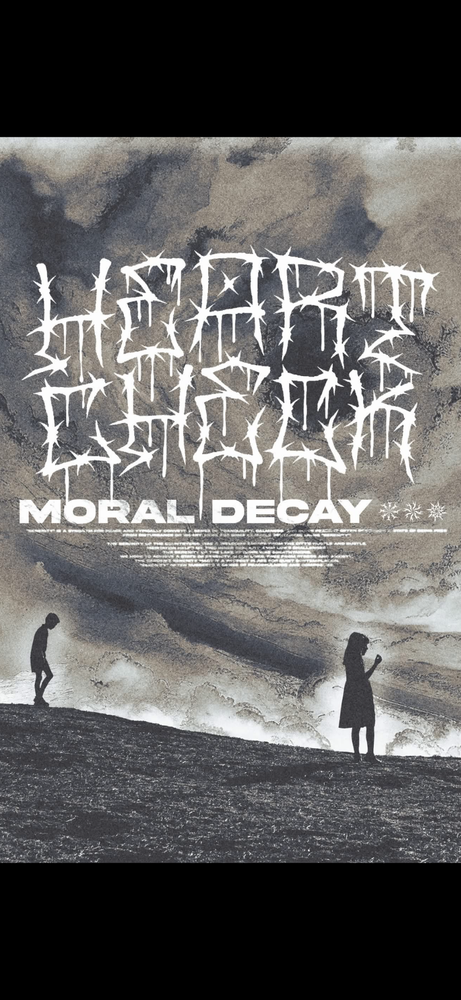

01
HEART CHECK TX / INDEPENDENT MUSIC
THE
WORLD
FADES.
WE DON'T.
A stark, raw home for Heart Check TX. Music that cuts through the static. Live dates, new material, and everything in between.

/// STATIC • DECAY • NOISE • HEART CHECK TX ///
001 — Appearances
UPCOMING
SHOWS.
Show details are placeholders until confirmed. Add dates, ticket links and venues when ready.
002 — Transmission
SOUND /
VISION.
02
03
003 — The people behind the sound
NOTHING
POLISHED.
HEART CHECK TX. A space for the real band story, member profiles, influences, and the experiences that shaped the music. Replace this placeholder with the band's official biography.
Get in Touch ↗004 — Connect
STAY IN
THE STATIC.
For bookings, press and show updates, connect with Heart Check TX. Replace the links below with verified social and contact details before publishing.